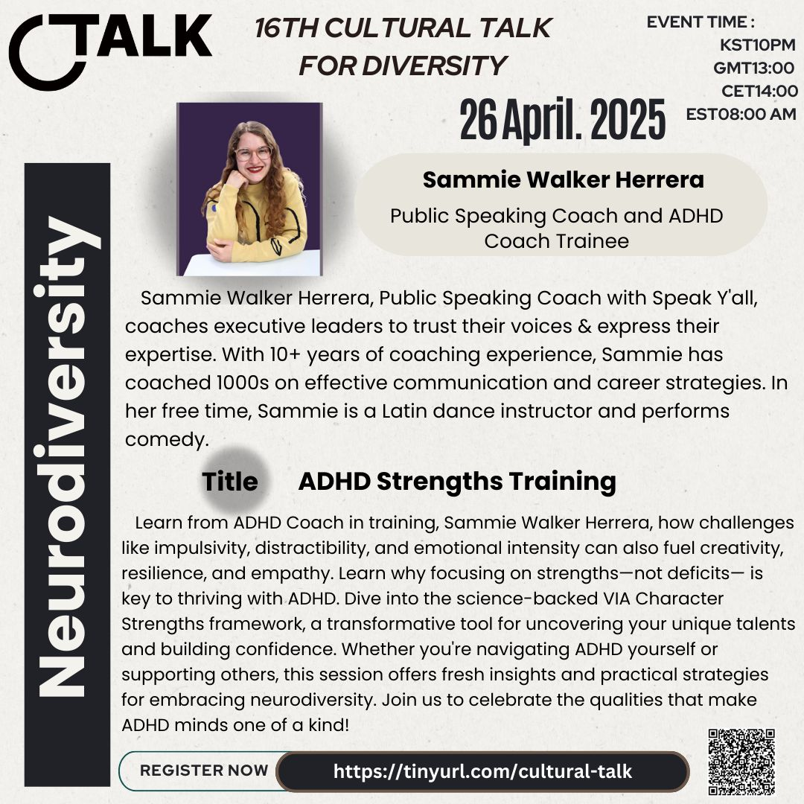
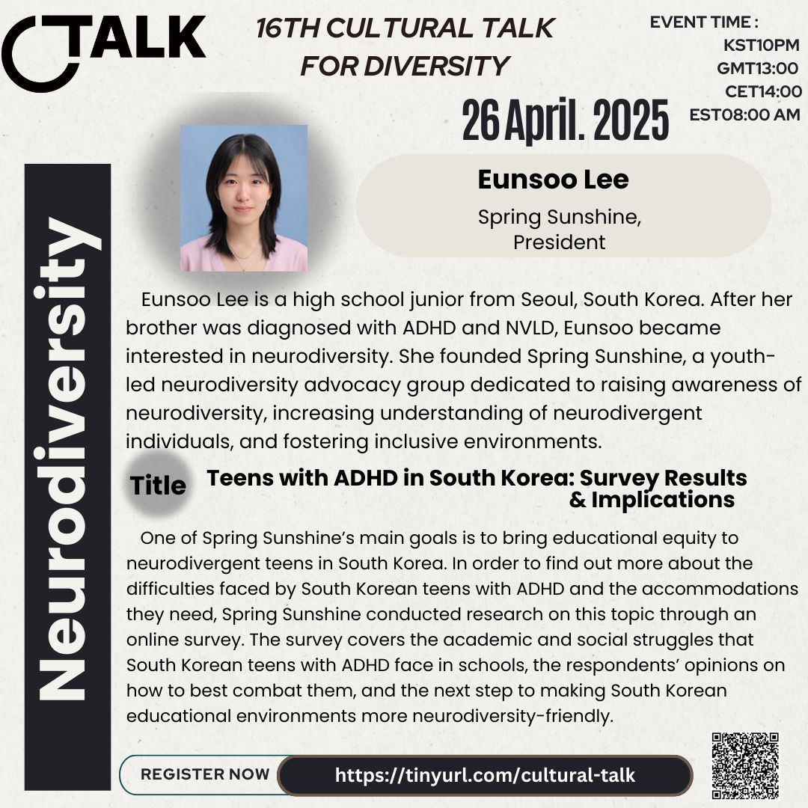

16th Cultural Talk For Diversity
Theme: Neurodiversity

Event Details
Date: 26 April, 2025
Time: 22:00 (KST) / 13:00 (GMT) / 14:00 (CET) / 09:00 (EST)
This event has already taken place and is now part of our archive.
Conference Overview
This session explored neurodiversity from multiple cultural and practical perspectives, connecting school experiences in South Korea with strengths-based coaching approaches. It invited participants to look beyond deficits and toward more inclusive, supportive, and empowering ways of understanding ADHD.

Eunsoo Lee
Spring Sunshine President
Eunsoo Lee is a high school junior from Seoul and founder of Spring Sunshine, a youth-led neurodiversity advocacy group. Inspired by her brother’s diagnosis of ADHD and NVLD, she works to raise awareness and foster more inclusive environments for neurodivergent students.
Topic: Teens with ADHD in South Korea: Survey Results & Implications
This talk shared research conducted by Spring Sunshine on the academic and social struggles faced by South Korean teens with ADHD. It highlighted student experiences, needed accommodations, and the next steps toward more neurodiversity-friendly educational environments.

Sammie Walker Herrera
Public Speaking Coach and ADHD Coach Trainee
Sammie Walker Herrera is a public speaking coach with more than 10 years of coaching experience, helping leaders trust their voices and communicate with confidence. She also brings a strengths-based lens to ADHD, drawing on coaching, communication, and personal insight.
Topic: ADHD Strengths Training
This session explored how impulsivity, distractibility, and emotional intensity can also support creativity, resilience, and empathy. Using the VIA Character Strengths framework, Sammie encouraged participants to focus on strengths rather than deficits when understanding ADHD.